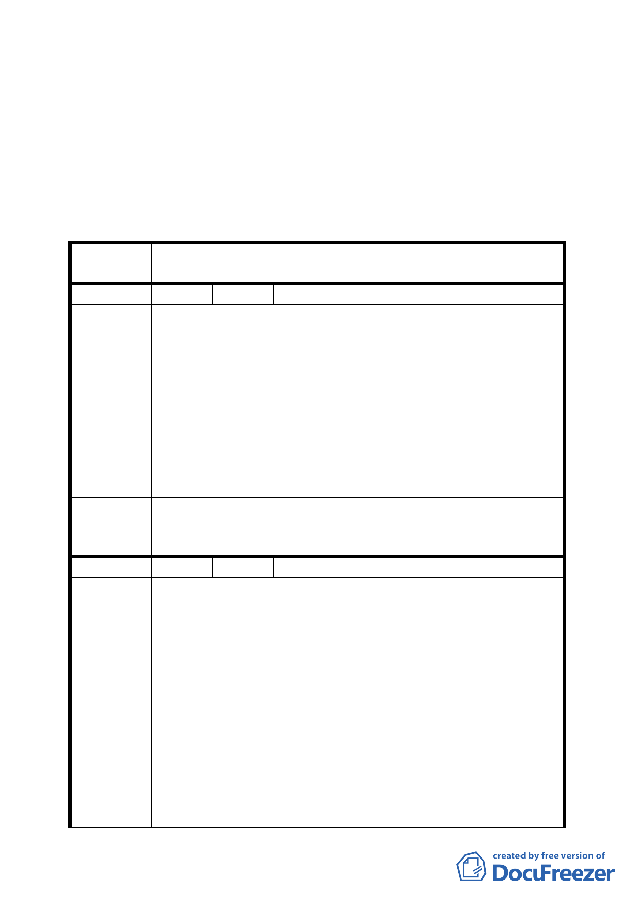

決議：
一、本案除計畫書第 4 頁「（三）本計畫區臨濱江街之道路」仍應
依第五四一次委員會議回應資料修正為「（三）本計畫區臨濱
江街之『基地』」外，其餘依發展局所提補充資料修正後通過。
二、公民或團體所提意見審決如後附綜理表。
臺北市都市計畫委員會公民或團體所提意見綜理表
案
名
變更臺北市濱江街汽車修護專用工業區內第二種工業
區為汽車修護展售工業區計畫案
編 號 １ 陳情人 臺北市政府交通局
一、本案計畫範圍係位於本市中山區高速公路及高速公路（汐
五高架段）所夾用地，市區主要出入道路為濱江街。就交
通分析方面而言，濱江街係以穿越性車流為主，且計畫區
大直橋以西為高速公路濱江街下匝道處，車流較為複雜。
陳情理由
此外，計畫區北側為濱江公園（大佳及迎風），假日均以
休閒、運動人次居多，亦以濱江街為主要出入道路。
二、由於計畫區之土地使用性質變動，且原修護使用調整為可
作為展售使用，基於展售場會吸引買車、觀賞之旅次，與
原先僅作修護不同，為免影響交通順暢，建議汽車展售場
應提供適當停車空間供商業活動使用。
建 議 辦 法 汽車展售場應提供適當停車空間供商業活動使用。
委員會決議
依發展局所提補充資料，參照本市土地使用分區管制規則第 20
組加倍留設停車空間。
編 號 ２ 陳情人 鄭景雲（中山區大佳段二小段 947 地號）
一、小面積之修車保養是否要做消防與環保處理之設施，因為
小面積再挪出來空間做消防與環保設施，那不就沒有什麼
空間可使用與實際需求。
二、本區為汽車修護專用工業區、第二種工業區，請問高危險
性之瓦斯加氣站與汽油加油站都可設置，那還用管制別的
陳情理由
行業使用限制嗎？是否可開放做多元化之輕工業使用。
三、我們之土地在濱江街拓寬馬路與造橋時已將大部份劃做上
開之公共建設用地，而只剩下在路邊之部份土地，既然馬
路與路橋都已做好，希望剩下之在濱江街馬路南邊之土地
給予適當之規劃使用，這樣當可促成路邊之景觀與正當充
分之利用。
建議辦法
一、可否採用一般建築等之簡易消防配備。
二、本區域之地價相當昂貴，除大汽車廠有能力建設做維修廠
四